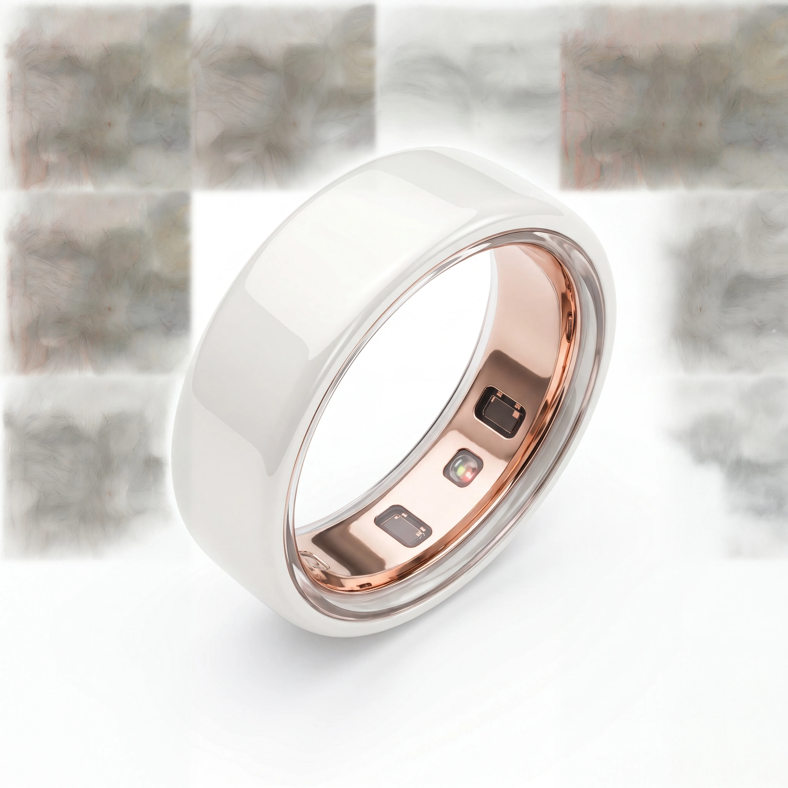
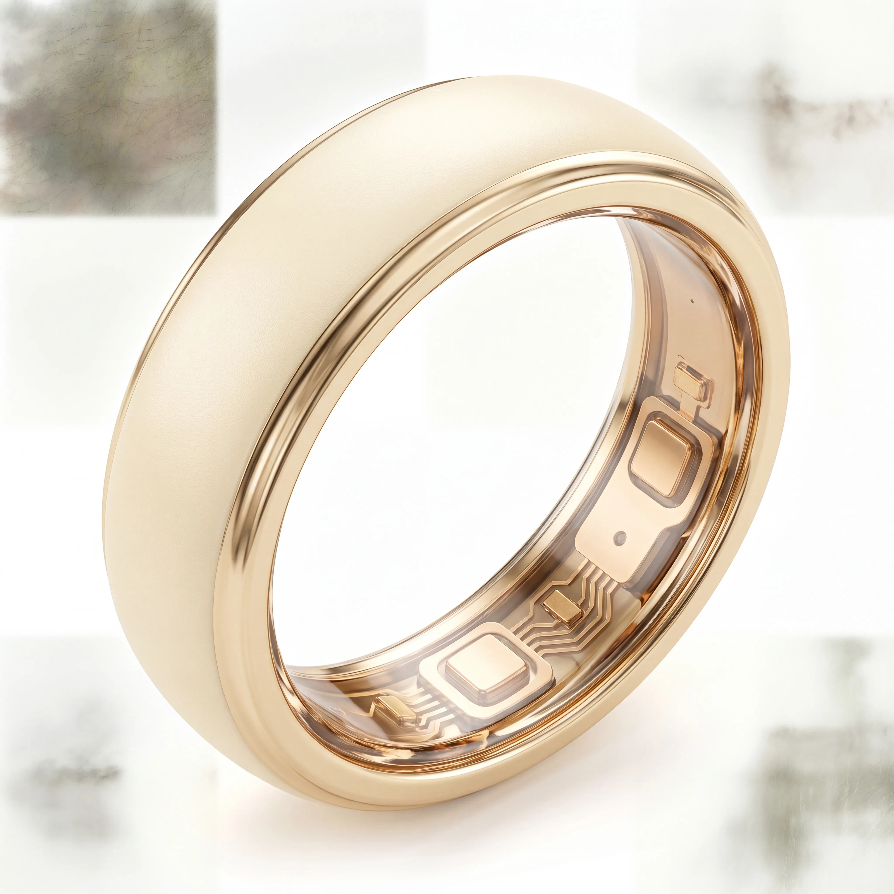
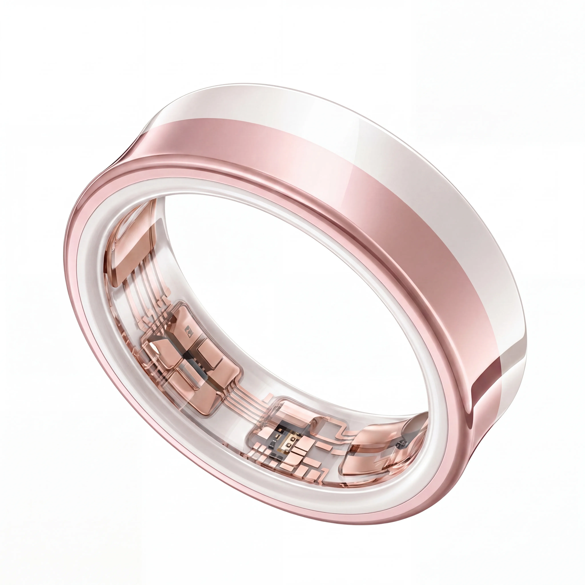
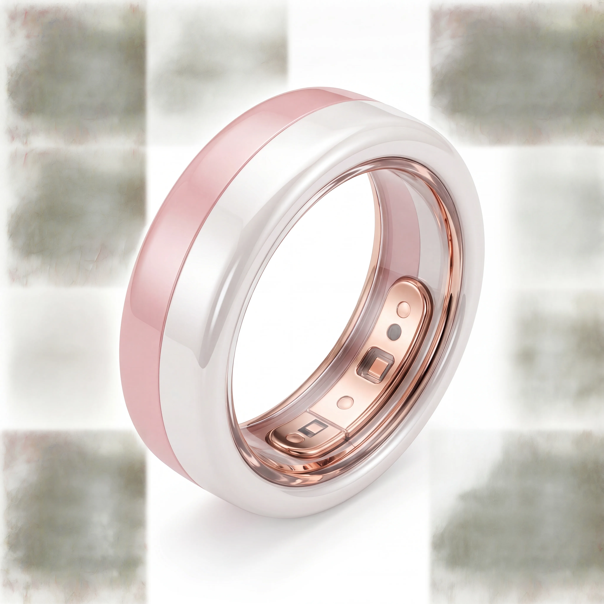
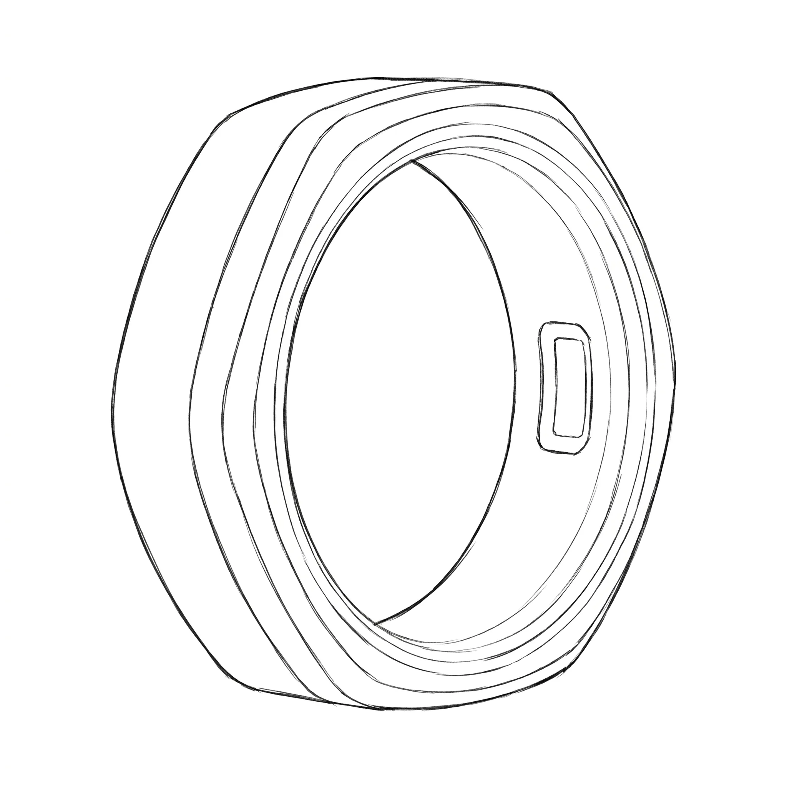

Women's Collection
Smart Rings Designed
for Women, First
The fastest-growing wearable segment has almost no design language for women. TALYX Women's Collection fills that gap — smart rings designed as jewelry, in the materials, colors, and proportions women actually want to wear.

Concept 01Pearl White — Women's Collection
Pure pearl white ceramic with a luminous, satin-smooth finish. 4.2mm ultra-slim band designed for the feminine hand. A ring that feels like fine jewelry.
- Pearl White zirconia ceramic
- 4.2mm ultra-slim profile
- Satin-luster finish
- Designed for stacking with fine jewelry

Concept 02Cream — Women's Collection
Warm cream ceramic with marble-textured inner band. The softest color in the collection. Designed for women who want warmth, not cold metal.
- Warm Cream ceramic formulation
- Marble-textured inner band contrast
- 5.0mm comfort-fit profile
- Warm, skin-like temperature feel

Concept 03Rose & Pearl — Dual-Tone
Seamless dual-color fusion of rose pink and pearl white. No visible seam at the color boundary. The signature technique of the women's collection.
- Seamless dual-color ceramic fusion
- Rose Pink + Pearl White
- Invisible color boundary
- Brand-color adaptable

Concept 04Pink Gold — Dual-Tone
Warm pink gold ceramic with a contrasting inner band. Designed for women who want jewelry-house aesthetics in a smart wearable. Stackable, elegant, unmistakable.
- Pink Gold ceramic formulation
- Contrast inner band detail
- 3.8mm stackable profile
- Jewelry-house finish quality

Concept 05AI Ring — Future Concepts
What happens when a ring becomes an AI-native device? Ambient sensing. Gesture recognition. Haptic feedback. Material-aware industrial design for the post-smartphone wearable. This is what we're exploring next.
- Gesture-recognition optimized form
- Multi-sensor integration zones
- Haptic feedback surface textures
- Material-aware antenna placement
"These concepts are not for sale. They are demonstrations of what our materials and design capabilities make possible. Every concept shown here can be adapted, customized, and brought to production. We design to inspire what comes next. When you're ready to turn a concept into a product, our prototyping and production engineering teams take over."
From Concept to Production
A TALYX concept is not a rendering. It's a material and manufacturing capability in design form. Here's the path from inspiration to product.
Concept Selection
Choose a direction from our concept library or bring your own vision. We'll map it to specific materials, finishes, and techniques.
Brand Adaptation
We adapt the material palette to your brand colors. Surface finish refinement. Ergonomic tuning for your target customer.
Physical Prototype
Functional prototypes in the specified materials and finishes. Wear-test, photograph, present to stakeholders. Iterate until it's right.
Production Specification
Complete manufacturing documentation. Material specs, finish standards, quality criteria. Ready for your production team to scale.
Have a concept in mind?
Bring your vision. We'll bring the materials and design capability to make it real.